hadoop开发
java 开发
添加依赖
1 | <dependencies> |
log4j 配置
在 resource 下创建 log4j.properties
1 | log4j.rootLogger=INFO, stdout |
hdfs的shell操作
启动 Hadoop 集群
1 | # 切换回原用户 |
-help：查看命令
1 | # 查看rm命令 |
-ls：显示目录信息
1 | hadoop fs -ls / |
-mkdir：创建目录
1 | # 创建多级目录 |
-moveFromLocal：从本地剪切粘贴到 HDFS
1 | # 跳转到hadoop目录 |
hadoop完全分布式运行模式
步骤
- 准备三台机器（关闭防火墙，静态 IP，主机名称）
- 安装 JDK
- 配置环境变量
- 安装 Hadoop
- 配置环境变量
- 配置集群
- 单点启动
- 配置 ssh
- 群起并测试集群
集群部署规划
| 服务 | hadoop1 | hadoop2 | hadoop3 |
|---|---|---|---|
| HDFS | NameNode DataNode | DataNode | SecondaryNameNode DataNode |
| YARN | NodeManager | ResourceManager NodeManager | NodeManager |
修改为静态 IP 地址
1 | cat <<EOF > /etc/sysconfig/network-scripts/ifcfg-eth0 |
关闭防火墙
1 | # 关闭防火墙 |
查看centos中的用户和用户组
用户列表文件：cat /etc/passwd
用户组列表文件：cat /etc/group
查看系统中有哪些用户：cut -d : -f 1 /etc/passwd
查看可以登录系统的用户：cat /etc/passwd | grep -v /sbin/nologin | cut -d : -f 1
查看用户操作：w 命令(需要 root 权限)
查看某一用户：w 用户名
查看登录用户：who
查看用户登录历史记录：last
查看用户属于哪个用户组：group atguigu
或者： id atguigu
创建 atguigu 用户组： groupadd atguigu
添加 atguigu 用户到 atguigu 用户组：usermod -G atguigu atguigu
docker-compose安装kafka集群和kafka-manager管理界面
安装前提：
- linux 发行版
- 已经安装好 docker
- 已经安装好 docker-compose
搭建步骤
- 新建一个 docker-compose.yml 文件内容如下
- 内容做必要的修改
1 | version: '2' |
- 运行
1 | # /* 运行单机版kafka */ |
Jmeter压测java接口、Jmeter自定义变量模拟多用户压测
场景：作为开发人员经常需要进行 java 接口的压测，比如商品抢购、并发量大的活动接口，需要模拟多用户进行并发压测，这个时候就需要使用到 Apache 的 Jmeter 压测工具了，本篇讲述的是使用 Jmeter 自定义变量模拟多用户压测，通俗点讲：就是把参数都放在一个文件中，Jmeter 调用接口时动态的去读取，比如你压测某个接口，接口入参需要 username、pricecode，将这些个参数都以下面的格式放在某个文件中，压测接口时让接口动态的读取：
1 | 17802115971_170921m80,1yuangou_h515927730423_150968z24,99yuanvip_pc…… |
具体步骤
1、如果你还没有安装 Jmeter，请移步至http://jmeter.apache.org/download_jmeter.cgi下载对应的版本并安装;
2、安装好后打开界面如下

默认的语言是 English，要是你不习惯，可往 Options 》Choose Languages 修改为中文，还有主题色，可往 Options 》Look and Feel 选项进行修改;
3、选中 Test plan 右击 》添加 》Threads(Users) 》线程组
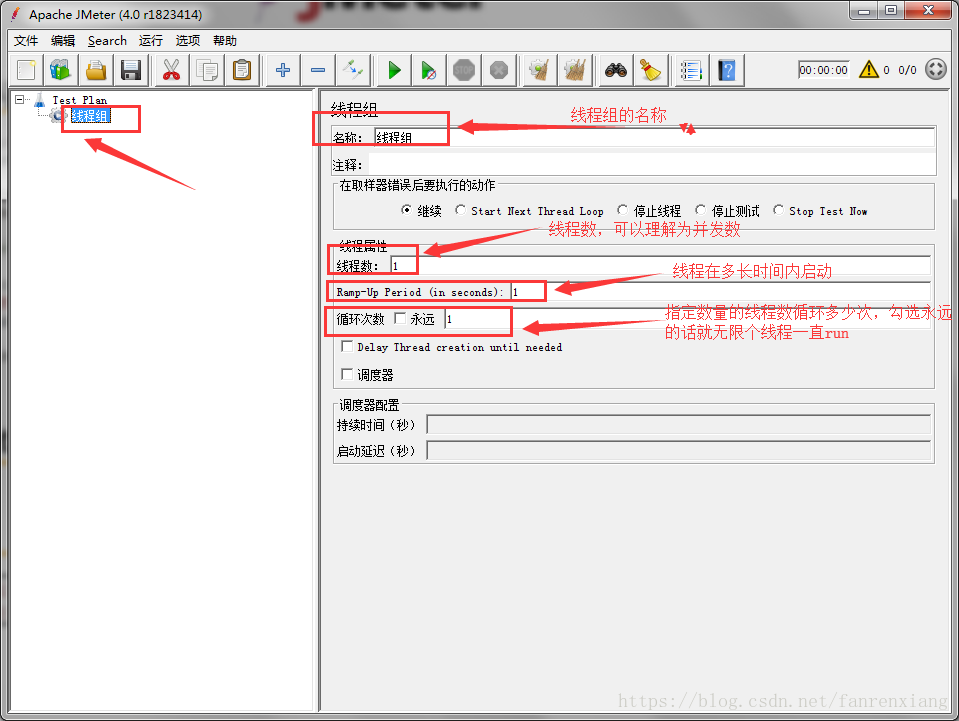
4、选中线程组右击 》添加 》配置元件 》HTTP 请求默认值
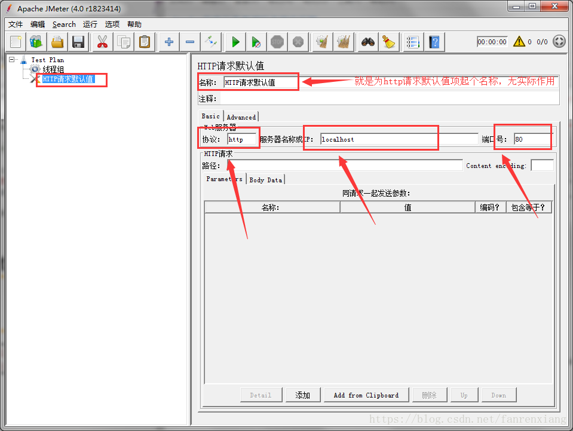
这里配置 HTTP 请求默认值的目的就是为了方便，因为 HTTP 请求默认值是 Test Plan 下公用的，这样你就不用在 HTTP 请求项时一个个配置，注意此步骤不是必须的，你可以直接跳到步骤 5;
5、选中线程组右击 》添加 》Sampler 》HTTP 请求，这里要注意：接口入参${username}里的 username 和第 6 步骤中 username、以及和接口的入参http://localhost/common/checkjoin?username=××都是一致的。
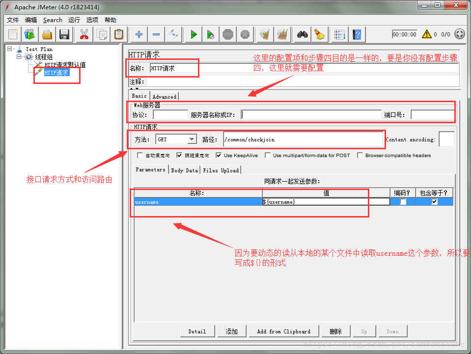
6、选中线程组右击 》添加 》配置元件 》CSV 数据文件设置
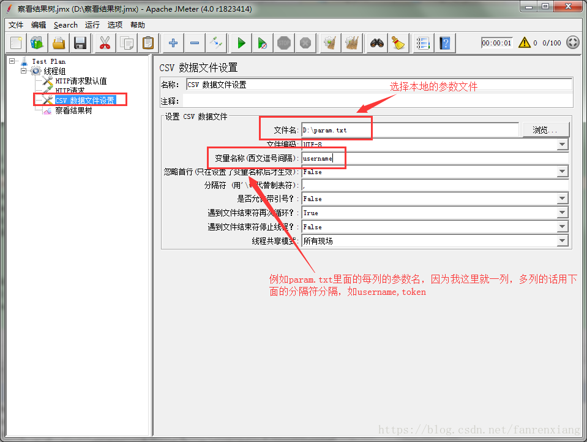
这里的变量名称必须和步骤 5 设置的同请求一同发送的参数项要一致，且和你的 controller 中的参数名也要一致。
如果接口里包含多个，步骤六中配置的变量名称就得用你自己指定的符号分隔开（上图中的分隔符），要对应你的 csv 文件中每一列参数分隔符，且步骤五同请求一起发送的参数名字也要对应。
例如我的 param.txt 文件是这样子的：只有一列 username 的取值
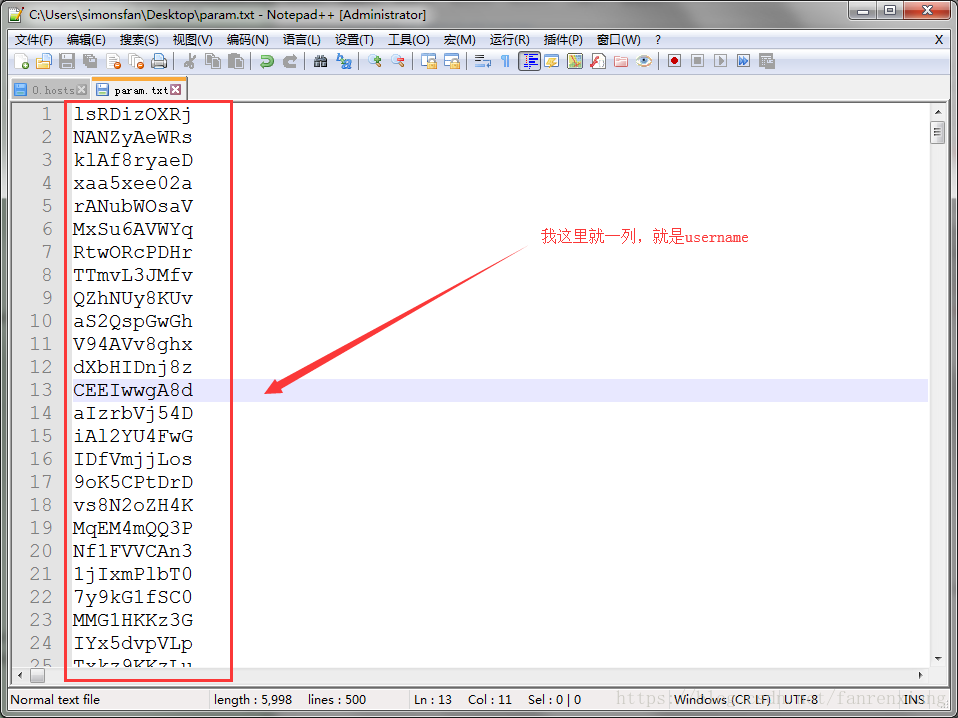
如果你的参数只有一个，但是也设置了逗号分隔之类的，也是可以的，不产生影响;
7、选中线程组右击 》添加 》监听器 》察看结果树
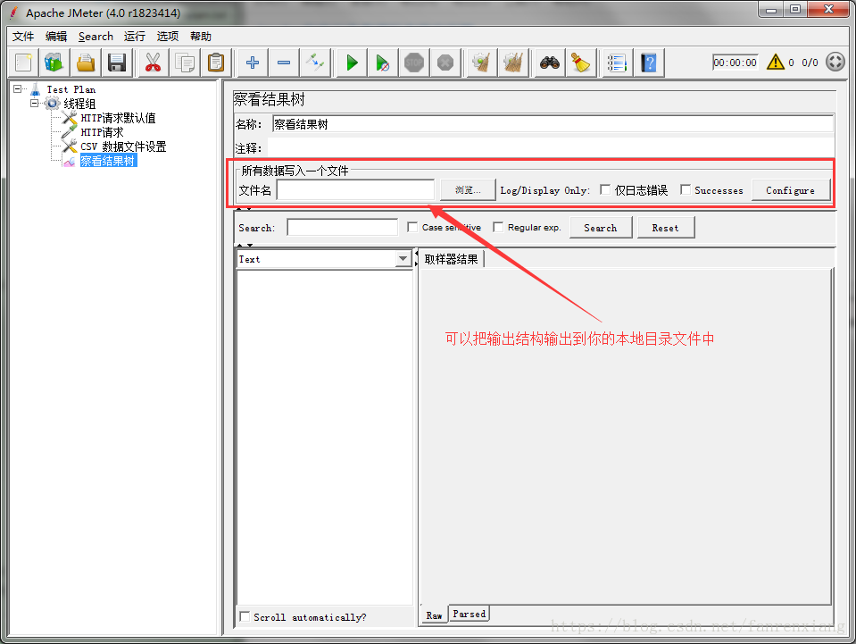
察看结果树界面可以看到每个接口的请求、返回值之类的，类似于抓包后的数据。在监听器选项里还有其他很多选项可以查看到压测情况:
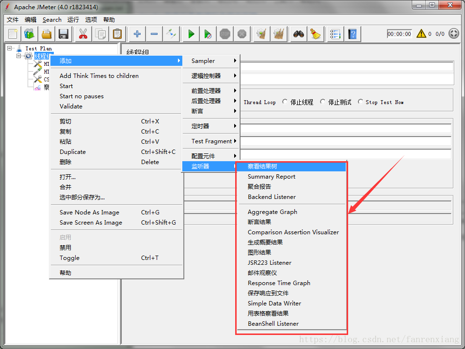
8、启动你的服务器，我是 idea 启动的本地服务，实际压测下
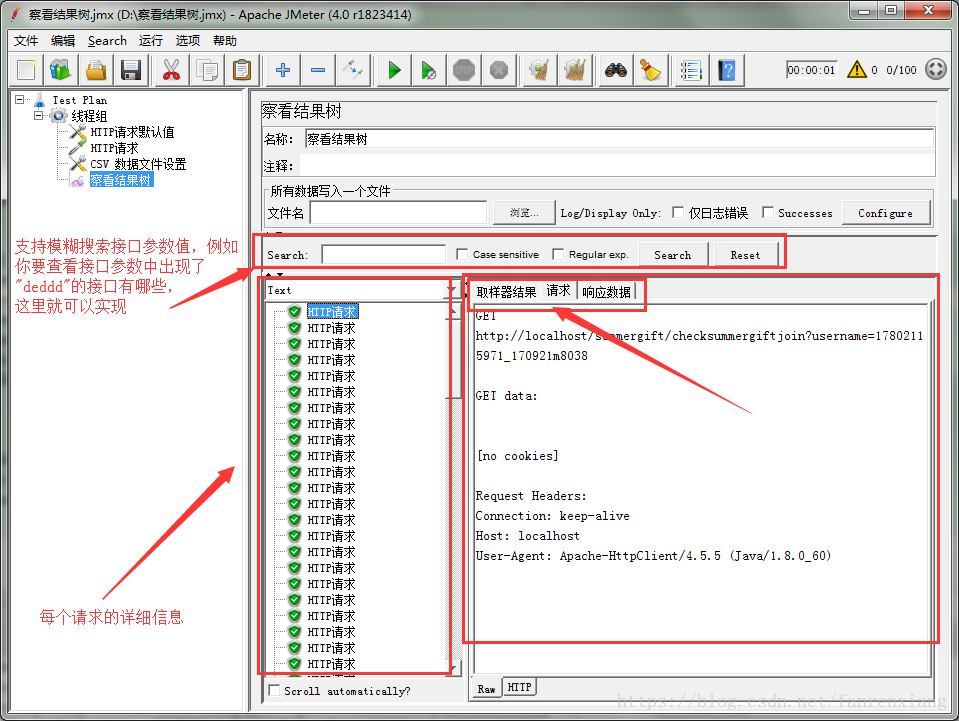
9、要及时的保存测试计划 Test Plan，不然关闭后下次进来就找不到了，同时，压测后可以右击查看结果树，清除上一次的测试接口。
docker 安装kafka
下载镜像
这里使用了 wurstmeister/kafka 和 wurstmeister/zookeeper 这两个版本的镜像
1 | docker pull wurstmeister/zookeeper |
在命令中运行 docker images 验证两个镜像已经安装完毕
启动
依次启动
1 | #启动 zookeeper 容器 |
192.168.59.101 改为宿主机器的 IP 地址，如果不这么设置，可能会导致在别的机器上访问不到 kafka。
测试 kafka
进入 kafka 容器的命令行
运行 docker ps，找到 kafka 的 CONTAINER ID，运行 docker exec -it \${CONTAINER ID} /bin/bash，进入 kafka 容器。
进入 kafka 默认目录 /opt/kafka_2.11-0.10.1.0
参考地址：https://blog.csdn.net/lblblblblzdx/article/details/80548294
docker 安装kafka
写在前面：在我们大量使用分布式数据库、分布式计算集群的时候，是否会遇到这样的一些问题：想分析一下用户行为，一遍我能设计出更好的广告位，相对用户的搜索关键字尽心统计，分析出前卫的流行趋势，有些数据存数据库浪费，直接存硬盘操作效率又低。kafka 在这样的场景下就是个不错的选择。
第一步 搭建 zookeeper 环境
在 centos 中，拉取 zookeeper 镜像，以及创建 zookeeper 容器:
1 | docker pull zookeeper |
注：192.168.9.219 读者请自行改为本机 ip，此文采用的单例，而非集群，如需集群 读者请自行创建.192.168.9.219
第二步 创建 kafka 环境
在 centos 中，创建 kafka 容器:
1 | docker pull wurstmeister/kafka |
注：由于 docker kafka 版本不断迭代，KAFKA_ADVERTISED_HOST_NAME 不再建议是用 localhost/127.0.0.1,故需要使用 KAFKA_ADVERTISED_HOST_NAME= ip 地址
第三步 验证 kafka 是否正确安装
进入到 kafka 容器中 并创建 topic 生产者，执行如下命令：
1 | docker exec -it kafka bash |
执行上诉命令后，另起一个标签页，执行如下命令 创建 kafka 消费者消费消息：
1 | docker exec -it kafka bash |
执行完上诉命令后，在生产者窗口中 输入任意内容回车，即可在消费者的窗口查看到消息
第四步 搭建 kafka 管理平台
kafka-manager 是目前最受欢迎的 kafka 集群管理工具，最早由雅虎开源，用户可以在 Web 界面执行一些简单的集群管理操作。具体支持以下内容：
- 管理多个集群
- 轻松检查群集状态（主题，消费者，偏移，代理，副本分发，分区分发）
- 运行首选副本选举
- 使用选项生成分区分配以选择要使用的代理
- 运行分区重新分配（基于生成的分配）
- 使用可选主题配置创建主题（0.8.1.1 具有与 0.8.2+不同的配置）
- 删除主题（仅支持 0.8.2+并记住在代理配 置中设置 delete.topic.enable = true）
- 主题列表现在指示标记为删除的主题（仅支持 0.8.2+）
- 批量生成多个主题的分区分配，并可选择要使用的代理
- 批量运行重新分配多个主题的分区
- 将分区添加到现有主题
- 更新现有主题的配置
在 centos 中，执行如下命令拉取镜像，创建对应容器，以及打开防火墙：
1 | docker pull sheepkiller/kafka-manager |
创建成后，在浏览器中访问 http://192.168.1.140:9000
读者通过配置 zookeeper 集群 以及 kafka 版本，进行操作 kafka
本文的配置 => Cluster Zookeeper Hosts:192.168.9.219:2181
Kafka Version: 0.8.2.2
如果读者验证过第三步，可以发现在右上角的菜单consumer发现有一个消费者。
附录
查看消息主题列表：
1 | ./kafka-topics.sh --list --zookeeper zookeeper:2181 |
查看指定 topic 信息：
1 | ./kafka-topics.sh --describe --zookeeper zookeeper:2181 --topic test |
centos用户用户组管理
转自https://www.cnblogs.com/nyfz/p/8557137.html
在 centos 中增加用户使用 adduser 命令而创建用户组使用 groupadd 命令，这个是不是非常的方便呀，其实复杂点的就是用户的组与组权限的命令了，下面来给各位介绍一下吧。
1、建用户：
adduser phpq //新建 phpq 用户
passwd phpq //给 phpq 用户设置密码
2、建工作组
groupadd test //新建 test 工作组
3、新建用户同时增加工作组
useradd -g test phpq //新建 phpq 用户并增加到 test 工作组
注：：-g 所属组 -d 家目录 -s 所用的 SHELL
4、给已有的用户增加工作组
usermod -G groupname username
或者：gpasswd -a username groupname
（注意：添加用户到某一个组 可以使用[usermod](http://man.linuxde.net/usermod "usermod命令") -G groupname username这个命令可以添加一个用户到指定的组，但是以前添加的组就会清空掉。
所以想要添加一个用户到一个组，同时保留以前添加的组时，请使用 gpasswd 这个命令来添加操作用户）
5、临时关闭
在/etc/shadow 文件中属于该用户的行的第二个字段（密码）前面加上就可以了。想恢复该用户，去掉即可。
或者使用如下命令关闭用户账号：
passwd peter –l
重新释放：
passwd peter –u
6、永久性删除用户账号
userdel peter
groupdel peter
usermod –G peter peter （强制删除该用户的主目录和主目录下的所有文件和子目录）
7、从组中删除用户
编辑/etc/group 找到 GROUP1 那一行，删除 A 或者用命令 gpasswd -d A GROUP
8、显示用户信息
id user
cat /etc/passwd
补充:查看用户和用户组的方法
用户列表文件：/etc/passwd
用户组列表文件：/etc/group
查看系统中有哪些用户：cut -d : -f 1 /etc/passwd
查看可以登录系统的用户：cat /etc/passwd | grep -v /sbin/nologin | cut -d : -f 1
查看某一用户：w 用户名
查看登录用户：who
查看用户登录历史记录：last
centos 普通用户设置 sudo 权限
一直使用 root 用户是危险的，最好在普通用户下进行工作。但有些操作必须要 root 权限才可以执行，所以，这里小编会介绍，如何让普通用户拥有 root 权限。
工具/原料
- centos
方法/步骤
敲入命令:
sudo mkdir xxx
希望在普通用户下，通过 sudo 命令，让用户暂时拥有 root 权限，并创建一个文件夹。
很明显，失败了，错误原因是：该用户暂没有 root 权限

敲入命令：
su
该命令可以让我们切换到 root 用户
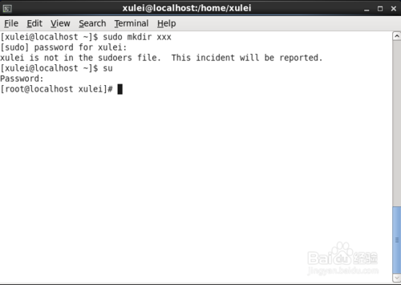
敲入命令：
visudo
visudo 命令是用来编辑修改/etc/sudoers 配置文件
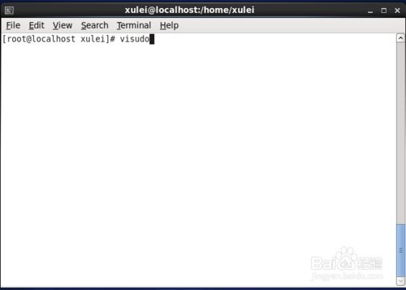
入下图所示，打开 sudoers 文件
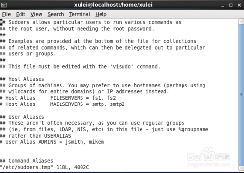
找到如下图所示，标出红线的一行
root ALL=(ALL) ALL
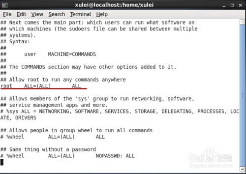
在“root ALL=(ALL) ALL”这一行下面，再加入一行：
xulei ALL=(ALL) ALL
其中，xulei 为你当前使用的用户名，也就是普通用户的用户名
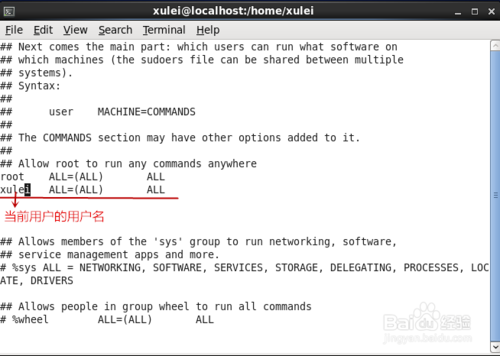
保存之后，输入 exit，退出 root 用户
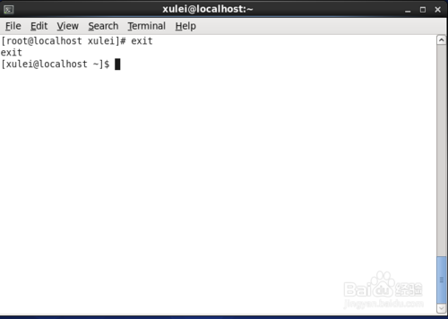
此时，再次输入命令：sudo mkdir xxx 之后，可以发现，xxx 文件夹建立成功，该文件夹是以 root 权限创建的
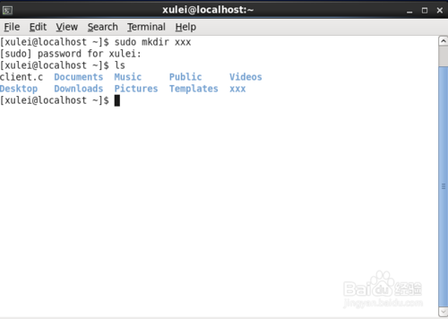
好啦，结束啦。下图是所有的命令的集合，在这里截个图！
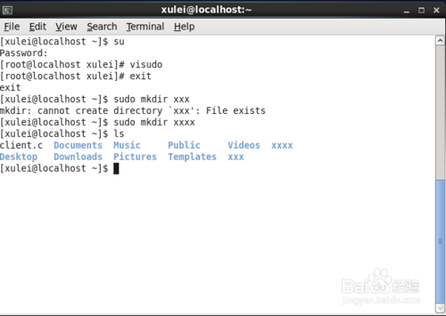